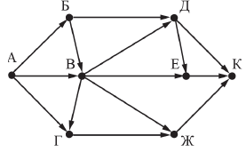
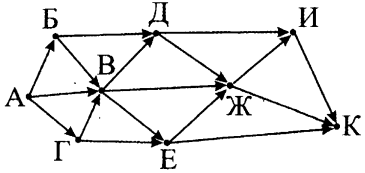

Информатика ОГЭ:
Разбор задание №9
Первая задача:
На рисунке – схема дорог, связывающих города А, Б, В, Г, Д, Е, Ж и К. По каждой дороге можно двигаться только в одном направлении, указанном стрелкой.
Сколько существует различных путей из города А в город К, проходящих через город В?
Решение:
- Поскольку нас интересуют пути, проходящие через город В, то вычеркнет те дороги, которые минуют город В:
- Как видим, таких дорог получилось две — Б->Д и А->Г. Учтем это при дальнейших расчетах.
- Решим задание с конца. Т.е. так как траектория поиска путей — от А до K, то мы будем рассматривать сначала город K.
- В город K можно попасть из трех городов — Д, E и Ж; запишем это так:
K = Д + Е + Ж
- Теперь аналогично рассмотрим города Д, Е и Ж:
Д = В (Б -> Д не учитываем)
Е = Д + В
Ж = В + Г
- Далее, рассмотрим каждый город, дойдя до первого — города А. Для него существует только одни путь. Также, для городов, выходящих только из города А, тоже существует только 1 путь. Таким образом имеем:
К = Д + Е + Ж
Д = В
Е = Д + В
Ж = В + Г
-----
Б = А = 1
A = 1
В = Б + А
Д = B
Ж = B + Г
Г = В (А - Г не учитываем)
Теперь возвращаемся, подставляя найденные значения: ↑
В = Б + А = 2
Г = В = 2
Д = В = 2
Ж = B + Г = 2 + 2 = 4
Е = Д + В = 2 + 2 = 4
- Поскольку нас интересуют пути, проходящие через город В, то вычеркнет те дороги, которые минуют город В:
К = Д + Е + Ж = 2 + 4 + 4 = 10
Ответ: 10
Вторая задача:
На рисунке – схема дорог, связывающих города А, Б, В, Г, Д, Е, Ж, И, К. По каждой дороге можно двигаться только в одном направлении, указанном стрелкой
Сколько существует различных путей из города А в город К, проходящих через город Ж?
Решение:
- Поскольку нас интересуют пути, проходящие через город Ж, то вычеркнем те дороги, которые минуют город Ж:
- Решим задание с конца. Т.е. так как траектория поиска путей — от А до K, то мы будем рассматривать сначала город K.
- В город K можно попасть из трех городов — И, E и Ж; запишем это так:
K = И + Ж
- Теперь аналогично рассмотрим города И, Е:
И = Ж
Ж = Д + В + Е
- Далее, рассмотрим каждый город, дойдя до первого — города А. Для него существует только одни путь. Также, для городов, выходящих только из города А, тоже существует только 1 путь. Таким образом имеем:
К = И + Ж
И = Ж
Ж = Д + В + Е
-----
Д = Б + В
Е = В + Г
В = Б + А + Г
А = 1
Г = А = 1
Б = А = 1
Теперь возвращаемся, подставляя найденные значения: ↑
В = Б + А + Г = 1 + 1 + 1 = 3
Д = Б + В = 1 + 3 = 4
Е = В + Г = 3 + 1 = 4
Ж = Д + В + Е = 4 + 3 + 4 = 11
И = Ж = 11
К = И + Ж = 22
Ответ: 22